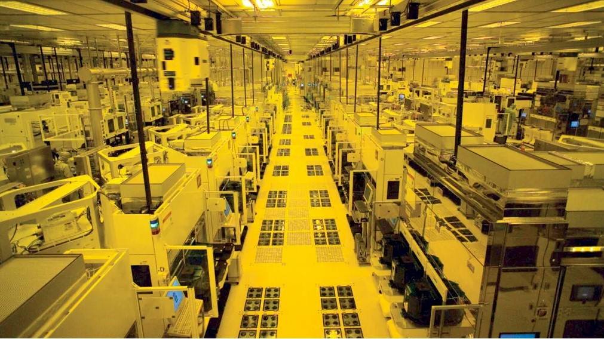

The Economics of Moore’s Laws
Now Moore’s two laws – governing principles behind the semiconductor industry – have come together to disrupt our traditional laws of business.
Moore's First Law is about operating expenses at scale
Moore’s Second Law is about the upfront capital needed to enable that production.
As the cost of production goes up and price per chip goes down, it becomes harder and harder to compete, and players are simply forced to drop out. When Moore’s two laws are taken together, we see an industry build for a winner-take-all. At the front of this last-man-standing competition is the Taiwan Semiconductor Manufacturing Company known as TSMC.
TSMC's competitors have decreased over the past few decades, a trend largely driven by the increasing complexity and cost of semiconductor manufacturing. Because the scale of production is so extreme and requires such specialized knowledge and equipment, only big companies can afford to keep reinvesting in the newest tech. For example, in the shift from 10nm to 5nm chips, the cost to TSMC of building a new fabrication plant rose from $1.7 billion to $5.4 billion.
This ever-widening gap between TSMC and the rest of the semiconductor market has given TSMC a very soft cushion to sleep on (although they are far from asleep at the wheel).
“We achieved technology leadership…I don’t think we’ll lose it.”
Morris Chang, the founder and former CEO of TSMC as reported by the New York Times in 2023.

But this is not a market that we can afford to be selective. We saw what happened during Covid where the annual worldwide production losses were estimated as $110 billion by May 2021. So many industries rely on these chips that even beyond the usual price regulation reasons, we can't risk this chokepoint.
So, in a winner-takes-all game, how do you play?
That’s the question the United States congress tried to answer when they passed the CHIPS and Science Act in 2022. The CHIPS Act set aside $52 billion to revitalize domestic semiconductor manufacturing, research, and development. The goal? Reduce America's dependence on foreign production, especially in light of geopolitical tensions and the looming threat of further monopolization.
But it's not just about building more factories. The CHIPS Act also aims for geographical diversification by funding new fabs in locations that reduce risk—such as the much-talked-about red soil of Arizona, where TSMC is building a new manufacturing plant. By bringing production closer to home, the U.S. hopes to mitigate the chokehold that one company or one country can have on the global chip supply.
 It's also about company diversification. The CHIPS Act isn't just handing cash to giants like TSMC or Intel; it’s also supporting a broader range of players—from upstarts to legacy companies—that can contribute to innovation. This funding opens the door for new entrants to step up and for older companies to reinvest in their capacity, potentially leveling the playing field.
It's also about company diversification. The CHIPS Act isn't just handing cash to giants like TSMC or Intel; it’s also supporting a broader range of players—from upstarts to legacy companies—that can contribute to innovation. This funding opens the door for new entrants to step up and for older companies to reinvest in their capacity, potentially leveling the playing field.
The rise of AI is going to make this problem worse. AI systems are particularly power-hungry, requiring more and more high-performance chips to function effectively. As demand skyrockets, the companies that control production capacity will have even more leverage over global markets. The CHIPS Act is designed to keep the U.S. competitive in this space—because falling behind in the semiconductor race means falling behind in nearly every industry that matters.